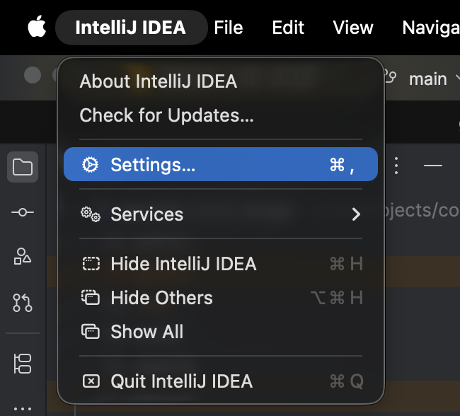

What is Speckit Chat?
Speckit Chat is an IntelliJ plugin that brings the Spec-Kit pipeline directly into your IDE. It connects to GitHub Copilot Chat in Agent mode, letting you run specialized AI agents that take you from a one-line feature idea all the way to implemented, tested code and GitHub issues.
Each step produces artifacts that feed into the next. Auto-handoffs keep the flow moving.
1 Prerequisites
bash, curl, unzip. Windows: PowerShell 5+.2 Install the Plugin
Download the plugin ZIP
Open Plugin Settings
IntelliJ IDEA menu → Settings... (Cmd+, on macOS, Ctrl+Alt+S on Windows/Linux).
Install from Disk
Go to Plugins, click the gear icon (⚙) → Install Plugin from Disk...

Select the ZIP file
Navigate to the downloaded Speckit Chat-0.1.0.zip and click Open.

Restart IntelliJ
Click Restart IDE. The Speckit Chat tool window appears in the bottom panel.

3 Init Speckit in Your Project
The plugin needs Speckit agent definitions in your project (.github/agents/ and .specify/).
From the Onboarding Tab
- Open the Speckit Chat tool window
- Select the Onboarding tab
- Click Init Speckit
From the Sessions Tab
- Select the Sessions tab
- Click the … menu next to the send button
- Select Init Speckit
.github/agents/*.agent.md (9 agent definitions),
.github/prompts/*.prompt.md (slash command mappings), and
.specify/ (shell scripts, templates, memory).
4 Using the Plugin
| Tab | Purpose |
|---|---|
| Sessions | Select an agent, enter arguments, send prompts to Copilot Chat in Agent mode. Track runs with status, duration, and session IDs. |
| Discovery | Run the Constitution agent to establish or update project engineering principles. |
| Specify | Quick-launch the Specify agent with a feature description to kick off the pipeline. |
| Onboarding | Welcome page with Init Speckit, feature overview, and documentation links. |
Running Your First Agent
Open the Sessions tab
The agent dropdown lists all available agents from .github/agents/ plus bundled defaults.
Select an agent
Start with constitution to establish project principles, then specify to create your first feature spec.
Enter arguments and send
Type your input and click send (or Ctrl+Enter). The prompt is sent to Copilot Chat in Agent mode.
Track progress
The run table shows status, duration, branch, and session ID. Double-click a row to switch to that Copilot Chat session.
5 Agent Reference
| Agent | Purpose | Requires | Produces |
|---|---|---|---|
constitution | Define governance principles for all agents | User input | constitution.md |
specify | Transform a feature description into a structured spec | Feature description | spec.md, checklists/requirements.md, git branch |
clarify | Resolve underspecified areas through targeted questions | spec.md | Updated spec.md |
plan | Generate technical design with architecture and data models | spec.md, constitution.md | plan.md, research.md, data-model.md, contracts/ |
tasks | Break plan into dependency-ordered, phased task list | plan.md, spec.md | tasks.md |
checklist | Generate requirement checklists that gate implementation | spec.md | checklists/[domain].md |
analyze | Read-only cross-artifact consistency check | tasks.md, spec.md, plan.md, constitution.md | Report (stdout only) |
implement | Execute tasks phase-by-phase with TDD and checklist gating | tasks.md, plan.md, checklists | Source code, updated tasks.md |
taskstoissues | Convert tasks into GitHub issues (one per task) | tasks.md, GitHub remote | GitHub issues |
6 Customization
Override Bundled Agents
Place custom .agent.md files in .github/agents/.
Project-level files take priority over bundled defaults.
Refresh Agents
Click the … menu in the Sessions tab and select Refresh Agents to reload without restarting.